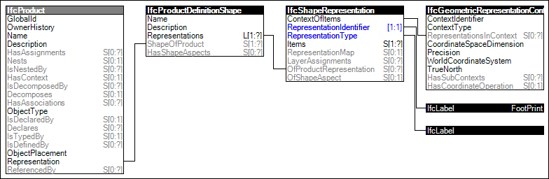

Link to this page
Link to this pageElements filling a boundary provide a 'Footprint' representation indicating a rectangle or any arbitrary set of outer and inner boundary curves. Examples of such elements include slabs and spaces. For elements that have a material layer set association indicating material thicknesses, a 'Body' representation may be generated based on the footprint and material layers. Fill area styles may indicate particular colors, tiles, or hatching for 2D rendering.
The representation identifier of the foot print representation is:
Figure 67 illustrates an instance diagram.
 |
Figure 67 — FootPrint Geometry |